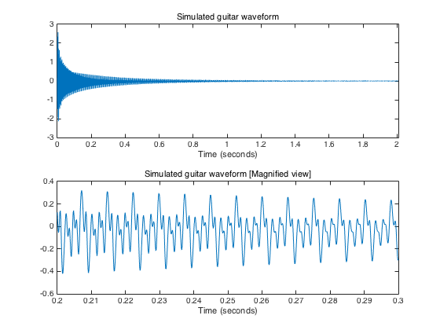
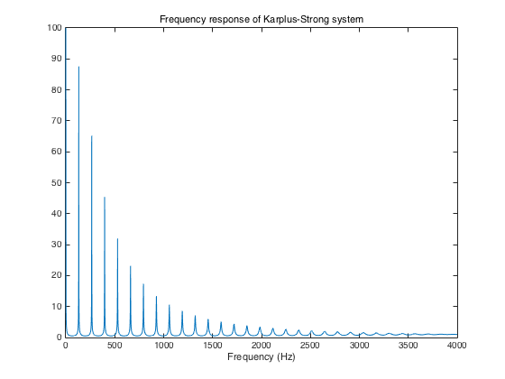

guitar_demo.m
Synthesize the sound of a plucked string using the Karplus-Strong method
Contents
Define filter
% Sampling frequency Fs = 8000; % Karplus-Strong paramters K = 0.99; N = 60; a = [1 zeros(1, N-1) -K/2 -K/2]; b = 1;
Define input signal
% time duration (seconds) T = 2.0; % input signal x = [randn(1, N) zeros(1, round(T*Fs))];
Computer output of filter
% output signal
y = filter(b, a, x);
Display output signal
t = (1:numel(y))/Fs; figure(1) clf subplot(2, 1, 1) plot(t, y) xlabel('Time (seconds)') title('Simulated guitar waveform') xlim([0 t(end)]) subplot(2, 1, 2) plot(t, y) xlabel('Time (seconds)') title('Simulated guitar waveform [Magnified view]') xlim([0.2 0.3]) print -dpdf figure_01 sound(y, Fs)
Frequency response of filter
[H, om] = freqz(b, a, 2^16); f = om/pi * Fs/2; figure(2) clf plot(f, abs(H)) xlabel('Frequency (Hz)') title('Frequency response of Karplus-Strong system') print -dpdf figure_02 % first peak in frequency response: Fs/(N+0.5)
ans = 132.2314